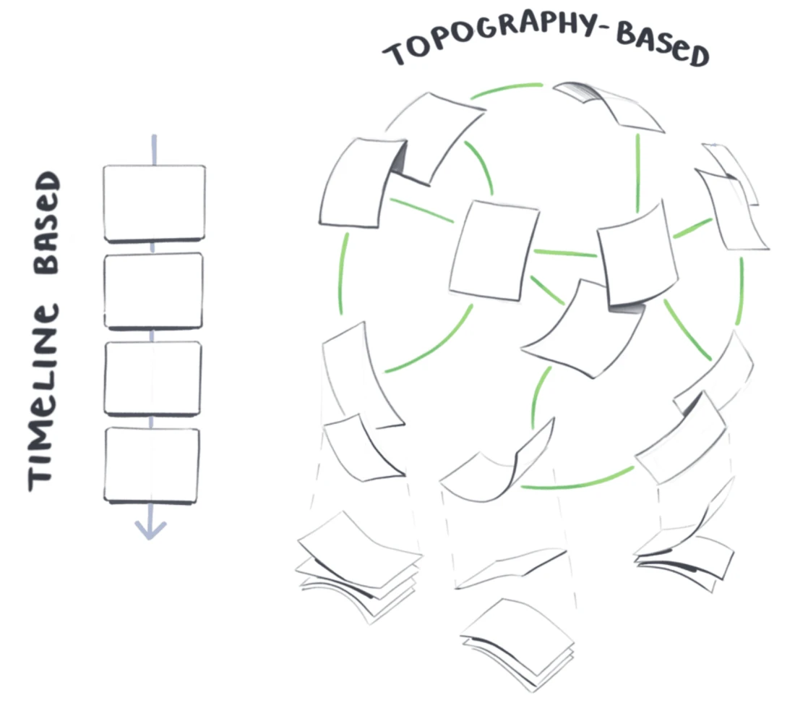
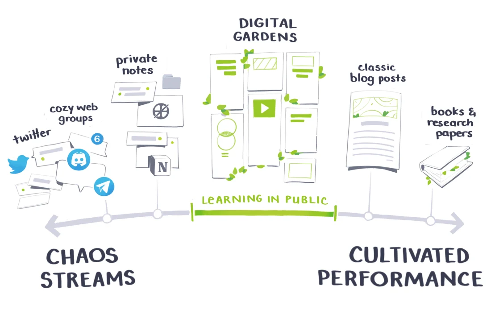

Digital Garden
Table of Contents
Notes from, A Brief History & Ethos of the Digital Garden (https://maggieappleton.com/garden-history)
Instead of reverse-choronologically sorted blog posts, a digital garden consits of
- Notes that link to each other
- links are bi-directional
- there can be a graph visualizing the content landscape
- notes don't need to be complete, they evolve over time
Gardens present information in a richly linked landscape that grows slowly over time.
The Garden is the web as topology. The web as space. It’s the integrative web, the iterative web, the web as an arrangement and rearrangement of things to one another.
1. Six Patterns of Gardening
1.1. Topography over Timelines
Gardens are organised around contextual relationships and associative links; Counter to time based structure of blogs

Figure 1: Digital Garden: Topography over Timeline
1.2. Continuous Growth
Gardens are never finished, they're constantly growing, evolving, and changing. Just like a real soil, carrot, and cabbage garden.
1.3. Imperfection and learning in Public

Figure 2: Learning in Public
Shawn Wang has written the Digital Gardening Terms of Service. Which asks the reader
- to allow the writer to be wrong,
- offer constructive criticism,
- and attribute their work.
And asks gardeners to
- be considerate of others (don't share private information or name and shame),
- offer epistemic disclosure (a short statement that makes clear how they know what they know, and how much time they've invested in researching it),
- and respond to feedback.
1.4. Playful, Personal, and Experimental
Each garden is unique and has a personal taste.
1.5. Intercropping & Content Diversity
Use audio-visual media, not just text.
1.6. Independent Ownership
You build, fully own and control a patch of the web for yourself. This doesn't live on the servers of LinkedIn, Twitter, Medium, etc.